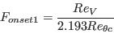
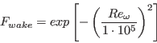

| (1) |
| (2) |
| (3) |
![\begin{displaymath}
\frac{\partial \left( \rho\hat Re_{\theta t} \right)}{\part...
...ight) \frac{\partial \hat Re_{\theta t}}{\partial x_j} \right]
\end{displaymath}](img4.png) |
(4) |
| (5) |
| (6) |
| (7) |
|  | (8) |
| (9) |
| (10) |
![\begin{displaymath}
F_{onset3} = max \left[ 1 - \left( \frac{R_T}{2.5} \right)^3, 0 \right]
\end{displaymath}](img11.png) |
(11) |
![\begin{displaymath}
F_{turb} = exp \left[ - \left( \frac{R_T}{4} \right) ^4 \right]
\end{displaymath}](img12.png) |
(12) |
| (13) |
| (14) |
![\begin{displaymath}
F_{sublayer} = exp \left[ - \left( \frac{Re_\omega}{200} \right) ^2 \right]
\end{displaymath}](img15.png) |
(15) |
| (16) |
| (17) |
| (18) |
| (19) |
| (20) |
| (21) |
| (22) |
| (23) |
| (24) |
| (25) |
| (26) |
| (27) |
![\begin{displaymath}
F_{\theta t} = min \left[ max \left( F_{wake} exp \left(- \...
...c{c_{e2}\gamma - 1}{c_{e2} - 1}\right) ^2 \right), 1.0 \right]
\end{displaymath}](img28.png) |
(28) |
| (29) |
|  | (30) |
| (31) |
| (32) |
| (33) |
| (34) |
 |
(35) |
| (36) |
 |
(37) |
| (38) |
| (39) |
| (40) |
| (41) |
| (42) |
| (43) |
![\begin{displaymath}
F_3 = exp \left[ - \left( \frac{R_y}{120} \right)^8 \right]
\end{displaymath}](img44.png) |
(44) |
| (45) |
| (46) |
| (47) |
| (48) |
| (49) |
| (50) |
| (51) |
| (52) |
| (53) |
| (54) |
| (55) |
| (56) |
| (57) |
| (58) |
| (59) |
| (60) |